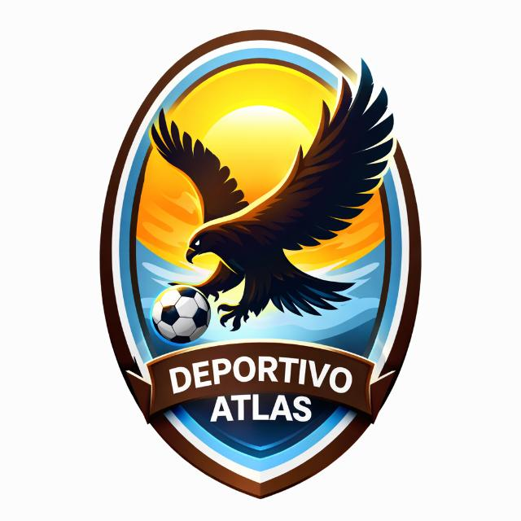
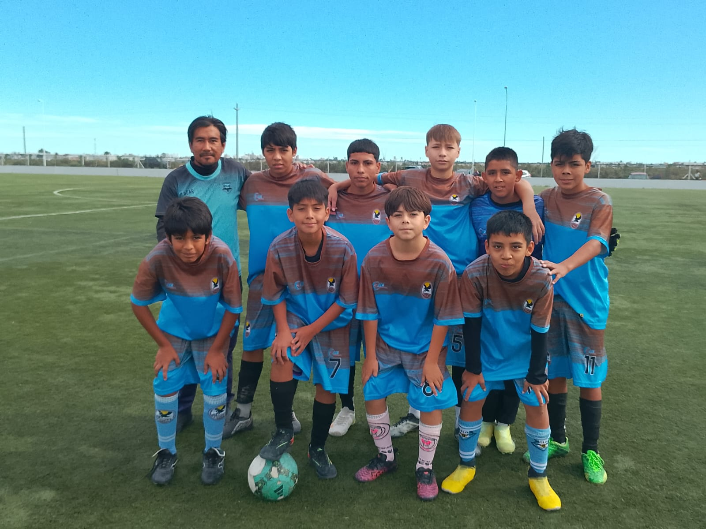
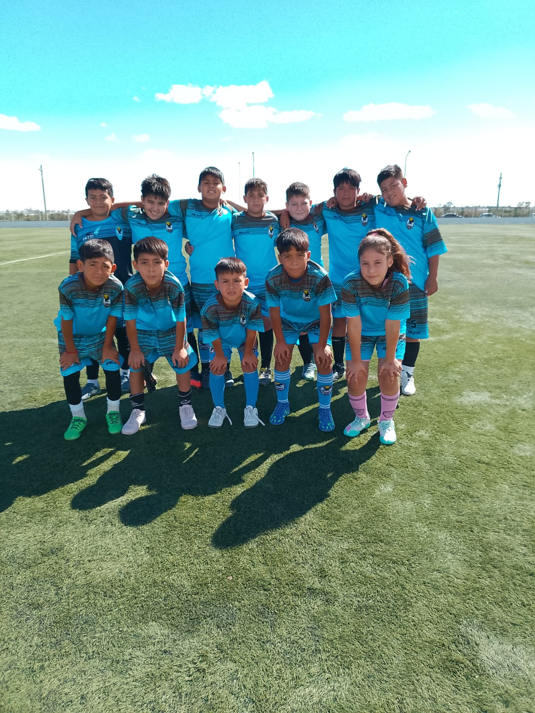
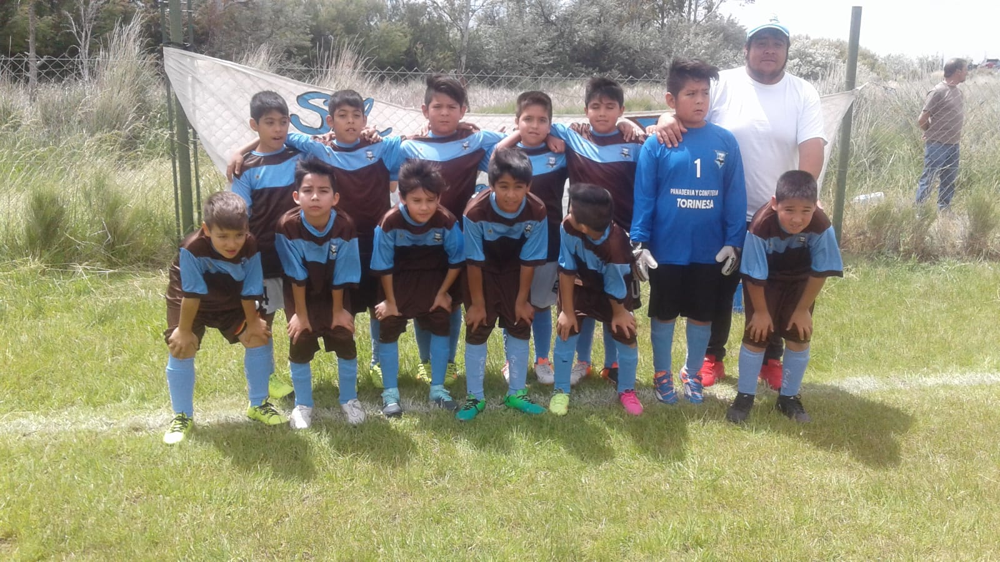
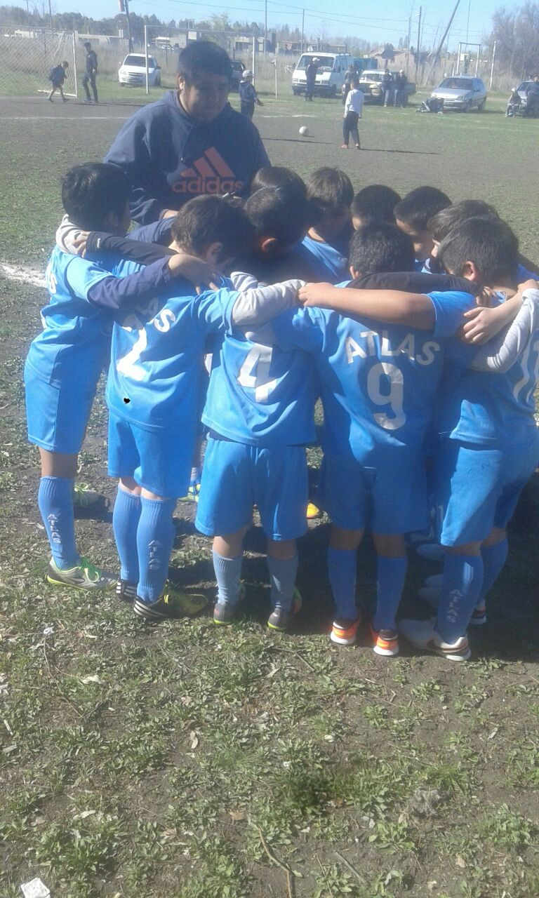
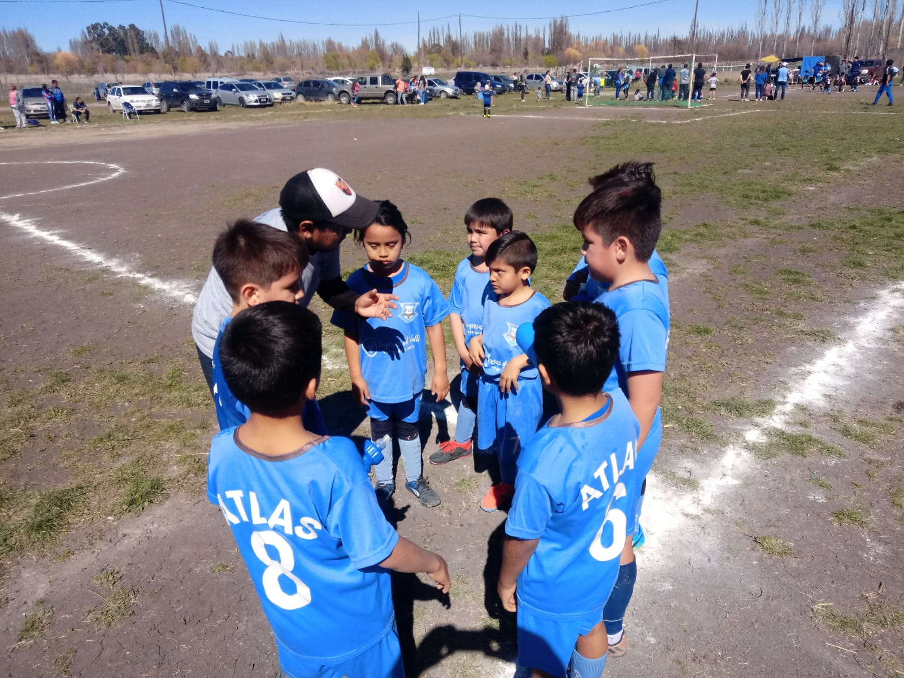

Desde la Patagonia
Pasión, identidad y territorio. Un club que lleva la historia de su gente en cada partido.
Conocer el club
Nuestra identidad
Deportivo Atlas Asociación Civil nació de la unión de vecinos que compartían una misma pasión por el fútbol y el deporte. Desde sus primeros años, el club se convirtió en un punto de encuentro para la comunidad.
A lo largo de los años, Atlas consolidó su identidad con los colores marrón y celeste, símbolos de la tierra y el cielo patagónico. Cada generación aportó su energía y dejó su marca en la historia del club.
Hoy, el club continúa apostando al deporte como herramienta de integración social, con divisiones inferiores activas y con miras a la continuidad de la categoría primera.
En 2025 comenzaron las tareas iniciales para el predio cercano a Barrio Los Aromos de Trelew, donde se están realizando trabajos de movimiento de suelo y preparación del terreno.
Momentos del club




